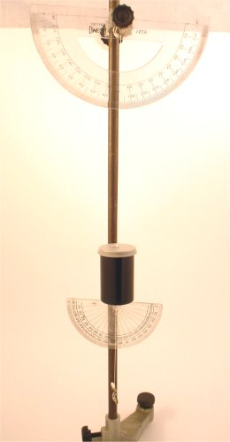
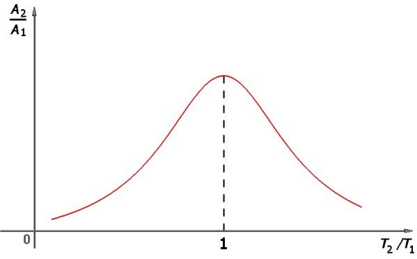
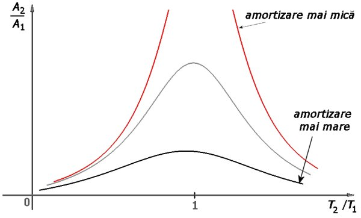
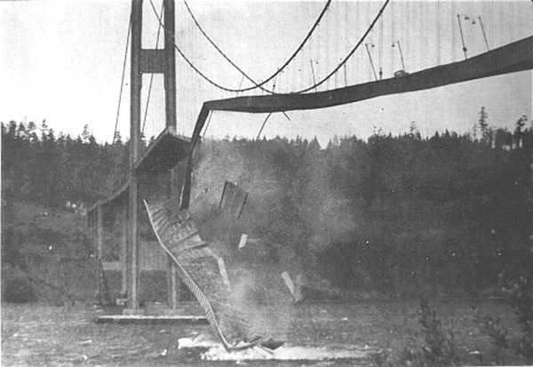

Provocarea 1B3−1
Provocarea 1B3−1
Cum te aştepţi să oscileze un oscilator atunci când este forţat să oscileze cu aceeaşi frecvenţă cu care ar oscila dacă ar fi liber?
B.3. |
Rezonanţa |
Un oscilator poate fi forţat să oscileze cu o altă frecvenţă decât cea cu care ar oscila dacă ar fi liber.
Provocarea 1B3−1
Cum te aştepţi să oscileze un oscilator atunci când este forţat să oscileze cu aceeaşi frecvenţă cu care ar oscila dacă ar fi liber?
Este firesc să ne aştepăm ca oscilatorul să oscileze în ritmul oscilaţiilor care îi sunt impuse (care, de data aceasta, coincide cu ritmul propriu de oscilaţie). Natura însă ne rezervă de multe ori surprize!
 Activitatea experimentală 1B3−1
Activitatea experimentală 1B3−1
Investighează oscilaţiile forţate având aceeaşi frecvenţă cu cea a unui oscilator liber. Lucrează în echipă.
Pasul 1 Foloseşte pendulul dublu pe care l−ai realizat la activitatea experimentală din secţiunea precedentă. Desfăşoară firul de pe cârligul pendulului inferior, până când cele două pendule au aceeaşi perioadă individuală de oscilaţie.
Pasul 2 "Linişteşte" pendulele în poziţia de echilibru (cu firele verticale, în prelungire). Trage lateral pendulul superior, pe o distanţă de câţiva centimetri şi eliberează−l. Observă mişcarea pendulelor.
La fiecare oscilaţie a pendulului superior, amplitudinea pendulului inferior devine din ce în ce mai mare, ajungând repede surprinzător de mare, mult mai mare decât a pendulului superior!
Când există "potrivire" între ritmul oscilaţiilor forţate şi ritmul propriu de oscilaţie, amplitudinea de oscilaţie devine repede foarte mare.
 Numim rezonanţă creşterea amplitudinii oscilaţiilor forţate în apropierea frecvenţei oscilaţiilor libere ale unui oscilator.
Numim rezonanţă creşterea amplitudinii oscilaţiilor forţate în apropierea frecvenţei oscilaţiilor libere ale unui oscilator.
În activitatea experimentală precedentă, este foarte puţin probabil ca perioadele individuale de oscilaţie ale celor două pendule să fi fost exact egale − cel mai probabil, acestea au fost aproape egale.
Amplificarea foarte mare a oscilaţiilor pendulului inferior are loc, aşadar, chiar şi când perioadele de oscilaţie ale celor două pendule sunt doar apropiate, nu neapărat identice.
Activitatea experimentală 1B3−2
Investighează oscilaţiile forţate ale unui oscilator în apropierea frecvenţei de rezonanţă. Lucrează în echipă.
Pasul 1 Prindeţi un raportor cu centrul în dreptul punctului de suspensie al pendulului superior, astfel încât să puteţi repera amplitudinea de oscilaţie a pendulului superior.
Prindeţi cu bandă adezivă un alt raportor pe pendulul superior, astfel încât să puteţi repera şi amplitudinea de oscilaţie a pendulului inferior (figura 1B3−1).
|  | Fig. 1B3-1. Cele două raportoare care permit reperarea amplitudinilor de oscilaţie ale celor două pendule. |
Pasul 2 Măsuraţi perioadele individuale de oscilaţie ale celor două pendule (pentru a măsura perioada de oscilaţie a pendulului inferior, imobilizaţi−l pe cel superior).
Pasul 3 Din poziţia de echilibru, lansaţi pendulul superior cu amplitudine mică, de câteva grade.
Măsuraţi amplitudinea maximă cu care oscilează pendulul inferior.
Completaţi primul rând al tabelului următor, unde T2/T1 este raportul perioadelor individuale de oscilaţie ale celor două pendule, iar A2/A1 este raportul amplitudinile unghiulare maxime ale acestora (indicele 1 este pentru pendulul superior).
| Nr. det. | T2/T1 | A2/A1 |
| 1 | ||
| 2 | ||
| 3 | ||
| 4 | ||
| 5 | ||
| 6 | ||
| 7 |
Pasul 4 Modificaţi lungimea pendulului inferior, înfăşurând sau desfăşurând aţa de pe cârligul său.
Măsuraţi de fiecare dată perioada proprie de oscilaţie a pendulului inferior.
Lansaţi de fiecare dată pendulul superior de la aceeaşi amplitudine unghiulară şi măsuraţi amplitudinea maximă cu care oscilează pendulul inferior.
Completaţi tabelul cu datele experimentale obţinute.
Pasul 5 Reprezentaţi grafic curba care trece prin punctele experimentale obţinute.
Amplificarea oscilaţiilor pendulului inferior se modifică odată cu modificarea raportului perioadelor individuale de oscilaţie. Amplitudinea de oscilaţie a pendulului inferior creşte abrupt aproape de rezonanţă şi este maximă la rezonanţă (figura 1B3−2).

Fig. 1B3-2. Curba de rezonanţă a pendulului inferior.
Provocarea 1B3−2
Ce te−ai aştepta să se întâmple la rezonanţă, în lipsa amortizării?
În condiţii de rezonanţă, forţele externe care forţează oscilaţiile sunt sincronizate cu propriile oscilaţii ale oscilatorului, contribuind la creşterea continuă a energiei de oscilaţie a acestuia. Doar amortizarea ar mai putea limita energia de oscilaţie.
În lipsa amortizării, amplitudinea de oscilaţie ar creşte nelimitat, cel puţin până la distrugerea oscilatorului!
Figura 1B3−3 prezintă câteva curbe de rezonanţă pentru diferite grade de amortizare.

Fig. 1B3-3. Curbe de rezonanţă, pentru diferite de grade de amortizare.
Accesează această aplicaţie care îţi permite să simulezi comportarea unui oscilator la rezonanţă, pentru diferite grade de amortizare.
Provocarea 1B3−3
Cum a fost oare posibil ca un vânt nu foarte puternic să distrugă podul de peste Tacoma? (figura 1B3−4)

Fig. 1B3-4. Prăbuşirea podului de peste Tacoma.
Când vântul loveşte o structură (cum este un pod, sau o clădire) provoacă, inevitabil, deformarea acesteia. Dar deformarea structurii modifică modul în care aceasta interacţionează cu curenţii de aer!
Astfel, chiar dacă vântul bate în permanenţă cu aceeaşi viteză, forţele la care este supusă structura se modifică odată cu deformările produse de vânt − structura este forţată să oscileze!
Dacă frecvenţa proprie de oscilaţie a structurii este apropiată de cea a oscilaţiilor forţate, amplitudinea de oscilaţie creşte mult. În lipsa unei amortizări consistente, oscilaţiile structurii pot deveni nepermis de mari, distrugând−o!
De la bun început, podul de peste Tacoma se deforma cu prea mare uşurinţă (datorită unei proiectări neatente), iar amortizarea era insuficientă (cei care treceau pe pod puteau simţi oscilaţiile structurii).
Neşansa a fost că frecvenţa proprie de oscilaţie a podului a coincis cu frecvenţa oscilaţiilor forţate pe care le provoca un vânt cu viteza de aproximativ 70 km/h.
Când a acţionat, pentru prima dată, un vânt cu această viteză (la nici patru luni de la inaugurare), podul a intrat în rezonanţă şi, datorită amortizării insuficiente, amplitudinea de oscilaţie a crescut nepermis şi o parte a structurii a cedat.
De atunci, proiectanţii structurilor sunt nevoiţi să se asigure că frecvenţele proprii de oscilaţie ale viitoarelor construcţii sunt cât mai departe de frecvenţele oscilaţiilor forţate la care aceste structuri ar putea fi supuse (datorită vântului, cutremurelor sau exploatării curente) şi, în plus, să prevadă măsuri eficiente de amortizare.